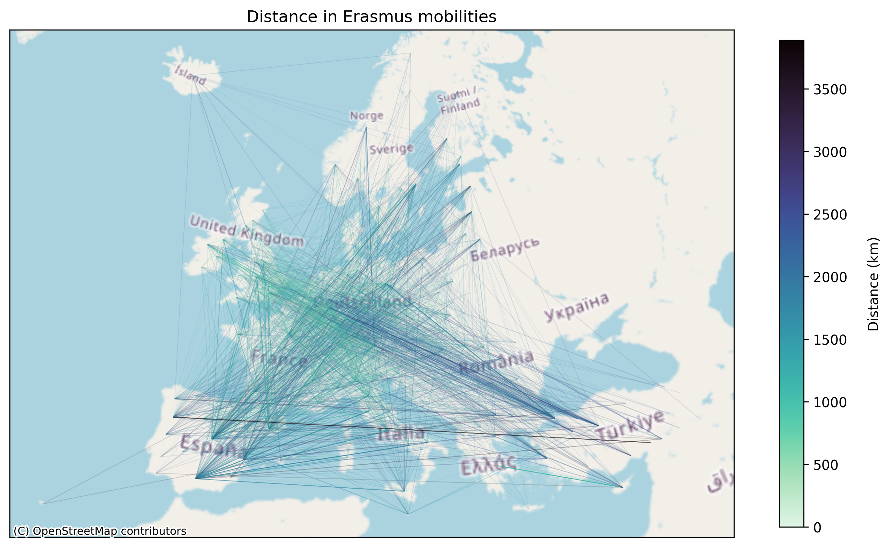
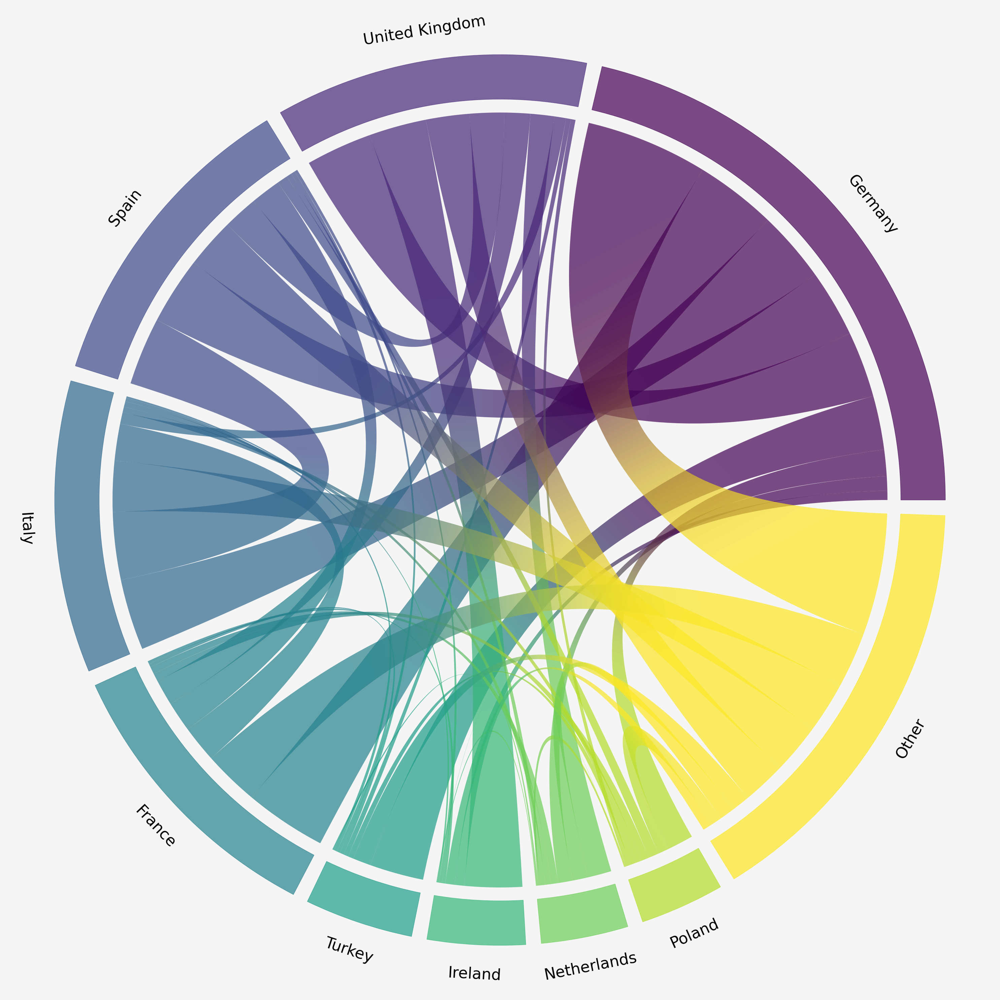

At the beginning of the course, I didn't have much previous experience with map making. Beyond the analytical skills I've developed since then, I feel like my confidence has grown quite a lot regarding the technical aspects of cartography. Simply put, creating beautiful maps seems way more possible now.
Each week I've learned various interesting aspects of cartography that I'd never considered before. This is the first map I made for this course:

I still really like this map. I think the layout works well for visual hierarchy, the colours pop nicely, the serif font gives a professional feel, and the story of inter-connectedness shines through.
There are, of course, things that could be changed. I have created a version with geodesic lines, but I think the improvement is marginal. Edge bundling may help with the clutter of lines, but the real untapped potential comes from interactivity. It would be great to be able to click on each Finnish airport for more information and further route highlighting. This version would probably require a dynamic zoom on Finland so the airports are farther apart. I think the storytelling aspect would also be improved by such interactivity as the map would better display each airport's role in connecting Finland to the rest of the world.
After trying and failing to implement this type of clicking interaction using python, I came to the conclusion that something like javascript would be better suited for this task. As I'm more interested in beautiful visualization than in GIS, I think learning cartography in js will be a great next step for my personal journey. Also, there are many cool maps I've seen in this course that I've yet to implement myself. I really think this course has helped me identify relevant map elements and I've developed a better sense for making cartographic decisions, so I can't wait to make more maps on my own!


Every good story has a plot twist and so is the case for this portfolio's narrative, although this twist was spoiled at the beginning by the page contents. We've seen the data and what it has to offer, so the path to the final version seems straightforward. However, there is one more wrinkle in that path, a new idea that further complicates things.
What if we played with the geographical area itself? After all, what could be more twisty in the cartographic world than a cartogram?